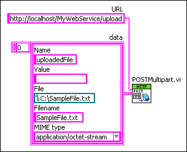

Parent Topic: Sending HTTP Requests to Web Services
Use the POST or PUT HTTP methods to upload files to a Web service. The Web service stores the files as .tmp files in a temporary directory.
|
Note��For more information about concepts in this topic, refer to the Web services introduction and tutorial. LabVIEW Web services are available only in the LabVIEW Full Development System and the LabVIEW Professional Development System. |
The following HTML code creates an HTML form that uses the POST method to upload a file to a Web service. The Web service name is MyWebService. The URL mapping is /upload.
<form name="send" action="/MyWebService/upload" enctype="multipart/form-data" method="POST">
<input type="file" name="uploadedFile">
<input type="submit" value="Submit">
</form>
This HTML code creates a form with one value field and a submit button. If you assign a file on the client-side, SampleFile.txt for example, to the field labeled uploadedFile and click the submit button, the HTML form submits SampleFile.txt to the Web service.
Use the POST, POSTMultipart, and PUT VIs to create a web client in LabVIEW that uploads files to a Web service. The following figure shows code that uses the POSTMultipart VI to upload a file similar to the HTML form in the previous example.
